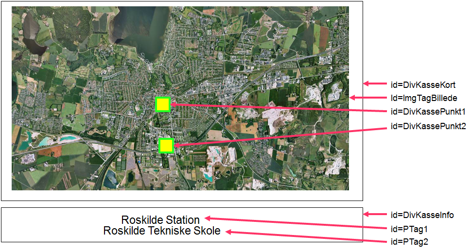
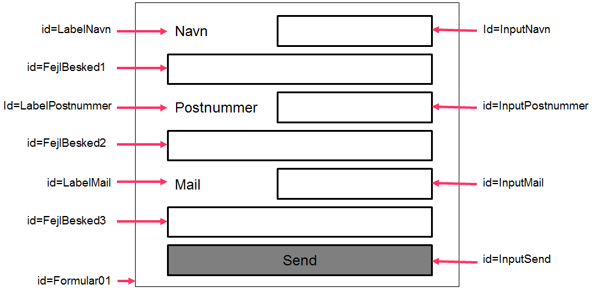

Du skal nu lave et interaktivt kort, en menu som viser den aktive side, indhold som kan udvides, et galleri og en valideret formular med Javascript. Disse grundliggende Javascript opgaver skulle du gerne kunne løse, ved at at følge de forskellige opgavebeskrivelser og benytte den HTML og CSS viden, du allerede burde have.
Interaktivt kort
Den første Javascript opgave bygger på det simple princip at en hændelse sætter gang i noget andet. Dette princip kan bruges til at lave mange forskellige ting på en webside. Et interaktivt kort er et kort over noget, såsom et verdenskort, bykort eller lignende, hvor der, når man holder musen over eller klikker på en del af kortet, vises noget information et andet sted.
Lav først en ny tom HTML side og en tilhørende CSS fil, inden at du går i gang med at sætte det interaktive kort op.
I denne opgave skal der, for at holde sammen på det interaktive kort, først i HTML'en laves en div kasse, som så skal indeholde et img tag med et billede af et bykort og to små div kasser med en gennemsigtig baggrundsfarve, der er positioneret forskellige steder oven på billedet.
Derudover skal der være en div kasse under det interaktive kort, hvor informationen om de to punkter vises, når man holder musen over punkterne. Inde i informations-div-kassen skal der placeres to p tags i midten med hver deres information. Du må selv bestemme hvilket billede du vil bruge, hvordan udseendet skal være og hvad der skal stå i de to p tags i informations-div-kassen.
Selve opsætningen gøres naturligvis kun med HTML og CSS og forklares ikke yderligere, da det antages at du allerede kan dette i HTML og CSS.
Opsætningen skal være på følgende måde:
 Hent billede her.De to p tags skal ikke vises til at starte med, så skjul disse to med display egenskaben sat til none i CSS'en.
Efter at alt HTML'en og CSS'en er lavet, er du nu klar til at tilføje en Javascript fil til sidst i HTML filen lige inden body tagget lukker, som forklaret først i kompendiet i afsnittet "Indsættelse af Javascript".
Det javascript du skal bruge for at få kortet til at blive interaktivt er hændelser, funktioner og DOM.
Skift nu over til den Javascript fil som du har tilføjet og begynd med at sætte hændelserne op.
Først skal der være en hændelse, der går i gang når websiden er indlæst. Denne hændelse sørger for at alle de hændelser, der skal være for de to punkter, først bliver sat op, når siden er indlæst. Der skal være en mouseover og en mouseout hændelse for hver af de to punkter på kortet og hver af hændelserne sætter deres egen funktion i gang.
Koden til at gøre dette ser således ud og skal tilføjes i Javascript filen:
document.addEventListener('DOMContentLoaded', function(){
document.querySelector("#DivKassePunkt1").addEventListener("mouseover", function(){
// Kør funktionen vispunkt1info();
});
document.querySelector("#DivKassePunkt1").addEventListener("mouseout", function(){
// Kør funktionen gempunkt1info();
});
// lav nu selv de næste 2 til DivKassePunkt2
});
Her tager document.querySelector("#") fat på det element i HTML'en med pågældende ID og man definerer så hvilke funktioner der skal gå i gang ved hvilke hændelser, eksempelvis funktionen med navnet vispunkt1info, hvis musen kommer over DivKassePunkt1.
De fire funktioner vispunkt1info, gempunkt1info, vispunkt2info og gempunkt2info, med koden til hvad der skal ske når hændelserne sker, er endnu ikke lavet. De er det sidste der mangler at blive lavet, inden at kortet gerne skulle virke.
Koden til 2 af de 4 funktioner ser ud på følgende måde og tilføjes i Javascript filen.
function vispunkt1info()
{
document.querySelector("#PTag1").style.display = 'inline-block';
}
function gempunkt1info()
{
document.querySelector("#PTag1").style.display = 'none';
}
Hver af funktionerne tager fat i et p tag med en bestemt id og ændrer CSS'en for dette element. I de 4 funktioner er det display egenskaben der skal ændres frem og tilbage mellem værdierne inline-block og none.
Instruktionen document.querySelector("#ID") hiver fat i et HTML element og giver adgang til at ændre på alt HTML og document.querySelector("#ID").style giver adgang til at ændre på alt CSS for et element og netop disse to instruktioner er en meget vigtig del af Javascript og DOM.
Gem nu Javascript filen og test det interaktive kort i browseren og se om det hele virker som det skal.
Indhold
Nogen gange kan der på en webside være et behov for at skjule noget indhold og først vise det når brugeren af websiden ønsker at få tilgang til det. Altså eksempelvis at skjule og vise noget brødtekst når man klikker på en overskrift, som det er tilfældet i denne opgave.
For at få løst denne opgave skal der igen bruges en HTML, en CSS og en Javascript fil som skal oprettes og linkes sammen. HTML filen skal indeholde to div tags, der hver især indeholder først et h1 tag og så et p tag med noget tekst i bå overskriften og i brødteksten. De to div tags skal begge have påført en klasse med navnet info. I den tilhørerende CSS fil skal p tagsene i info div kasserne skjules ved at sætte display egenskaben til none. Javascript filen sørger for resten og skal først have tilføjet en lytter der fanger når HTML'en er blevet indlæst i browseren, ligesom de forrige opgaver har fået til at starte med. Her skal funktionen InfoKasser sættes i gang, som skal tage sig af at få overskrifterne til at reagere på at brugeren trykker på dem.
Igangsætning af funktionen InfoKasser ser ud på følgende måde.
document.addEventListener('DOMContentLoaded', function(){
InfoKasser();
});
Nu skal funktionen InfoKasser så laves. Funktionen skal når HTML'en er blevet indlæst tage fat i alle de elementer i HTML'en der har fået påført klassen info, det vil sige de to div kasser der er i HTML'en og sætte en lytter på dem som sætter funktionen InfoKasseSkift i gang når man trykker på dem.
Funktionen InfoKasser kommer efter load lytteren er sat på og funktionen ser ud som følger.
function InfoKasser()
{
for ( var i = 0; i < document.querySelectorAll('.info').length; i++ )
{
document.querySelectorAll('.info')[i].addEventListener('click',InfoKasseSkift);
}
}
Funktionen InfoKasser starter med at sætte en for løkke i gang som gennemløber alle de elementer der har fået påført klassenavnet info. Der tages så inde i for løkken fat på hvert element og en lytter tilføjes elementet så en ny funktion kaldet InfoKasseSkift sættes i gang hvis man klikker på elementet. Dette gør at alle div kasser med klassen info og indeholdende en overskrift og noget brødtekst, vil komme til at reagere på brugerens museklik. Nye div kasser med overskrift og brødtekst kan nu nemt tilføjes i HTML'en ved bare at tilføje klassen info på div tagget.
Funktionen InfoKasseSkift skal tilføjes efter funktionen InfoKasser og den ser ud som følger.
function InfoKasseSkift()
{
if( this.querySelectorAll('p')[0].style.display != "block" )
{
this.querySelectorAll('p')[0].style.display = "block";
}
else
{
this.querySelectorAll('p')[0].style.display = "none";
}
}
Funktionen InfoKasseSkift indeholder en if betingelse der checker om det første p tag i elementet this, det vil sige den div kasse brugeren trykkede på, ikke har display egenskaben sat til block og hvis ikke at den har dette, så får den det. Altså hvis p tagget inde i div tagget er skjult, så vis det. Hvis if betingelsen ikke opfyldes, det vil sige at p tagget i div kassen allerede har display egenskaben sat til block og p tagget kan ses, så skal display egenskaben sættes til none og p tagget bliver så skjult. Funktionen InfoKasseSkift ændrer altså display egenskaben på p tagget frem og tilbage når man klikker på div tagget.
Menu
Den næste Javascript opgave går ud på at lave en menu som viser den aktive side. Menuen skal altså selv finde ud af hvilken side man er inde på, ved at sammenligne browser URL'en med de forskellige URL'er i menuen og herefter tilføje noget CSS på det menupunkt som er det aktive.
Der skal selvfølgelig bruges en HTML fil, en CSS fil og en Javascript fil for at løse denne opgave. HTML filen skal hedde index.html, indeholde en menu og derudover linkes til både en CSS fil i head tagget og en Javascript fil til sidst i body tagget, som så håndterer menuen. Start derfor med at lave en HTML fil og en CSS fil. HTML filen skal indeholde en menu der består af et nav tag med navnet HovedMenu som id indeholdende et ul tag, der så igen indeholder 3 li tags, som hver især indeholder a tags med links til HTML siderne, index.html, produkter.html og kontakt.html. Den tilhørerende CSS fil skal til at starte med, kun fjerne prikkerne, padding og margin på ul tagget. Lav også en klasse i CSS filen, der hedder active og sætter background egenskaben til farven rød. Tilføj så bagefter Javascript filen til sidst i HTML filen. Nu er HTML og CSS færdigt og resten der skal laves er Javascript.
Det første som skal laves i Javascript for at få menuen til at virke på websiden er en funktion, når websiden bliver loadet i browseren. Denne funktion håndterer menuen på websiden.
document.addEventListener('DOMContentLoaded', function(){
MenuPunktAktiv();
});
Dette gør at når HTML siden er indlæst i browseren, kalder Javascript MenuPunktAktiv funktionen, som tager sig af at sætte klassen active på det rigtige link i menuen. Når dette er gjort skal funktionen MenuPunktAktiv så oprettes og udspecificeres, med hensyn til hvordan den skal gøre dette.
Funktionen MenuPunktAktiv ser ud som følger og skal placeres efter Javascript koden der sætter funktionen i gang, når websiden bliver indlæst.
function MenuPunktAktiv()
let current = "" + window.location;
let nav = document.querySelector('#HovedMenu');
let anchors = nav.querySelector('a');
if( current.search( ".html" ) == -1 )
{
current = current + "index.html";
}
for ( let i = 0; i < anchor.length; i++ )
{
if( current.toLowerCase() == anchor[i].href.toLowerCase() )
{
anchor[i].className = "active";
}
}
}
Det første som funktionen gør er at oprette tre forskellige variabler, current, nav og anchor. Variablen current indeholder browser URL'en, variablen nav indeholder nav tagget med navnet HovedMenu som id og variablen anchor indeholder alle a tagsene i nav tagget, det vil sige de forskellige links i menuen.
Det næste i funktionen er et if check om den nuværende browser URL ikke ender på html, hvis dette er tilfældet får variablen current tilføjet index.html til sidst i URL'en. Dette gøres da man nogen gange ikke skriver index.html i browser URL'en, eksempelvis når man går ind på http://RTS.DK, så er man i virkeligheden inde på http://RTS.DK/index.html.
det er php filer i stedet for html man bruger Javascript funktionen på, ændres .html bare til .php i stedet for i koden. Til sidst i funktionen løber en for løkke igennem alle links i nav menuen og for hvert link spørges der med en if betingelse om browser URL'en og link URL'en er ens.
Hvis de to er ens får linket tilføjet klassen active, som blev oprettet i CSS filen tidligere. Nu skulle menuen gerne virke hvis html filen er blevet kaldt index. Opret nu de to andre HTML filer produkter.html og kontakt.html som menuen henviser til og indsæt menuen i HTML'en på samme måde som index.html. Husk også at tilføje både CSS og Javascript filerne
Formularvalidering
I denne opgave skal du lave en formular, der sørger for, at det man indtaster, valideres inden at formularen sendes.
Det første der skal laves er derfor en tom HMTL side, med tilhørerende CSS fil og lave en formular med et form tag, der indeholder en række label og input tags, plus et p tag til fejlbeskederne bagefter.
Mere præcist skal formularen have den følgende opbygning og elementer, med hver deres eget navn i id attributten. Udseendet af formularen behøves ikke at ligne fuldstændig, det vigtigste er opbygningen, elementerne og navnene.
Når formularen er lavet i HTML og CSS, er det blevet tid til at lave en ny tom Javascript fil og tilføje et script tag der linker til den i head tagget, så funktionaliteten i formularen kan blive lavet som det næste.
Det første der skal laves af Javascript, er ligesom i de foregående opgaver en hændelse når websiden er indlæst. Hændelsen skal sørge for at formularen får tilknyttet en funktion der hedder "Valider", når formularen submittes ved tryk på submit knappen. Funktionen sørger for at man kan validere indtastningerne fra felterne og selv bestemme, og bestemme om formularen skal sendes ved at returnere enten true eller false. Det giver følgende kode.
document.addEventListener('DOMContentLoaded', function(){
document.querySelector("#Formular01").addEventListener('click',ValiderForm);
});
Herefter laves submit funktionen, der bare skal sørge for at give en instruktion, nemlig return false hvilket blokerer afsendelsen af formularen. Den ser derfor sådan her ud.
Det der nu mangler er selve valideringen, udskrivelsen af fejlbeskeder og afsendelsen af formularen. Det nye der skal bruges i denne opgave, udover return false, som der ikke rigtigt er brug for at gå mere i dybden med lige her i starten, er måden hvorpå man kan tilføje tekst og tags til HTML'en med innerHTML egenskaben.
Lav nu funktionen til at validere. Denne funktion sætter, hver gang man trykker på send knappen, først fire variabler, nemlig talvariablen AntalFejl og tekstvariablerne FejlBesked1, FejlBesked2 og FejlBesked3 til henholdsvis 0, "", "" og "", hvor "" betyder at der ikke er noget tekst til at starte med. Derefter skal der være en if else struktur til hver af de tre felter, som spørger om de er tomme. Hvis de hver især er tomme, tælles der en fejl op i AntalFejl variablen og der tilføjes en passende tekst til FejlBesked variablen. Hvis de ikke er tomme, checkes der med et såkaldt regulært udtryk, som er et mønster der definerer hvilke tegn som er tilladte, om det indtastede ikke er i orden og der skal tælles en fejl op, plus laves en fejlbesked.
Til sidst bruges en if else struktur til at checke om der er talt nogen fejl op i AntalFejl variablen. Hvis der ingen fejl er sendes formularen og hvis der er nogen fejl skrives teksten med fejlbeskeder fra FejlBesked variablerne, ind i p tagsene til fejlbeskederne. Koden til valideringsfunktionen bliver dermed som følger.
Lav 1 if-sætning ad gangen og test den inden den næste laves.
function ValiderForm()
{
let AntalFejl = 0;
let FejlBesked1 = "";
let FejlBesked2 = "";
let FejlBesked3 = "";
if( document.querySelector('#InputNavn').value == "" )
{
AntalFejl += 1;
FejlBesked1 = "Skriv dit navn!";
}
else
{
var regexpbogstaver = /^[a-zA-Z ]+$/;
if( !regexpbogstaver.test(document.querySelector('#InputNavn').value ) )
{
AntalFejl += 1;
FejlBesked1 = "Navn må kun indeholde bogstaver og mellemrum!";
}
}
if( document.querySelector('#InputPostnummer').value == "" )
{
AntalFejl += 1;
FejlBesked2 = "Skriv dit postnummer!";
}
else
{
var regexptal = /^[0-9]+$/;
if( !regexptal.test( document.querySelector('#InputPostnummer').value ) )
{
AntalFejl += 1;
FejlBesked2 += "Postnummer må kun indeholde tal!";
}
}
if( document.querySelector('#InputMail').value == "" )
{
AntalFejl += 1;
FejlBesked3 = "Skriv din mail!";
}
else
{
var regexpmail = /^[A-Za-zÆØÅæøå0-9_.]+[@]{1}[a-zA-Z_]+?\.[a-zA-Z]{2,3}$/;
if( !regexpmail.test( document.querySelector('#InputMail').value ) )
{
AntalFejl += 1;
FejlBesked3 = "Mail er ikke gyldig!";
}
}
if( AntalFejl == 0 )
{
return true;
}
else
{
document.querySelector('#FejlBesked1').innerHTML = FejlBesked1;
document.querySelector('#FejlBesked2').innerHTML = FejlBesked2;
document.querySelector('#FejlBesked3').innerHTML = FejlBesked3;
return false;
}
}
Formularen skulle nu gerne validere indtastningsfelterne, for om der er indtastet noget i dem, give fejlbeskeder hvis nogen af dem er tomme og ellers sende formularen, hvis noget er indtastet i alle felterne. Så test den i browseren og som om alt fungerer efter hensigten.